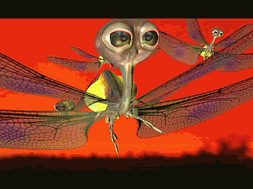
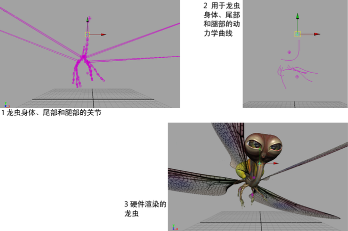
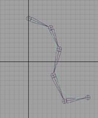

在这种情况下，将创建动力学 IK 样条链并用于蜻蜓型昆虫模型。随着飞龙昆虫到处移动，其尾巴略微摆动。


创建动力学 IK 样条链
- 创建一个新场景，然后切换至“侧”(Side)正交视图。
- 在“装备”(Rigging)菜单集中，选择。
- 若要在静止位置绘制尾巴，如下图所示，单击 Y 轴顶部附近位置，然后单击创建如同沿着尾巴一样的关节。在最后一个关节处按 Enter 键。

- 选择并跟踪关节上的曲线，同时单击各个关节以创建 CV。在最后一个关节结尾处按 Enter 键。
- 选择曲线后，在“FX”菜单集中，选择。
- 选择 > 当前位置”(nHair > Display > Current Position)。
- 若要将曲线附加到链，请在“装备”(Rigging)菜单集中，选择 >
 。
。
- 在“IK 样条线控制柄设置”(IK Spline Handle Settings)编辑器中，禁用“自动创建曲线”(Auto Create Curve)。
- 按照“帮助行”(Help Line)中的说明进行操作，其中包括：
- 单击起始关节。
- 单击末关节。
- 单击“当前位置”(Current Position)曲线。
- 若要选择毛囊，请执行下列操作：
- 选择曲线。
- 在“属性编辑器”(Attribute Editor)中选择 follicleShape。
- 单击“属性编辑器”(Attribute Editor)底部的“选择”(Select)按钮。
- 在 follicleShape 中，将“点锁定”(Point Lock)设定为“基础”(Base)。
- 若要播放模拟，请选择。
- 若要稳定动力学曲线的行为，请调整“属性编辑器”(Attribute Editor)的 hairSystemShape 中“动力学特性”(Dynamic Properties)部分的“弯曲阻力”(Bend Resistance)属性值。